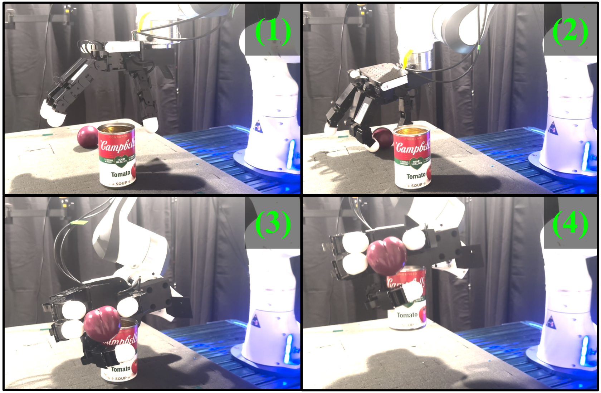

|
Kuanning Wang I'm a master of science student at School of Computer Science in Fudan University. I am fortunate to be advised by Prof.Yanwei Fu and Prof.Xiangyang Xue, and I am also lucky to be mentored by Prof.Daniel Seita and Dr.Yuqian Fu. |

|
ResearchI'm currently interested in Robot Learning, Multimodal and Embodied AI. |

|
RAG-6DPose: Retrieval-Augmented 6D Pose Estimation via Leveraging CAD as Knowledge Base
Kuanning Wang, Yuqian Fu, Tianyu Wang, Yanwei Fu, Longfei Liang, Yu-Gang Jiang, Xiangyang Xue IROS, 2025 project page / arXiv |
|
 |
Sequential Multi-Object Grasping with One Dexterous Hand
Sicheng He, Zeyu Shangguan, Kuanning Wang, Yongchong Gu, Yuqian Fu, Yanwei Fu, Daniel Seita IROS, 2025 project page / arXiv |
|
|
Spatial-Temporal Aware Visuomotor Diffusion Policy Learning.
Zhenyang Liu, Yikai Wang, Kuanning Wang, Longfei Liang, Xiangyang Xue, Yanwei Fu ICCV, 2025 project page / arXiv |

|
DiffusionBERT: Improving Generative Masked Language Models with Diffusion Models.
Zhengfu He, Tianxiang Sun, Qiong Tang, Kuanning Wang, Xuanjing Huang, Xipeng Qiu ACL, 2023 project page / arXiv |
Academic Service |
Reviewer, RA-L 2025
Reviewer, IROS 2025 |
Education |
Undergraduate student in Fudan University from 2020.9 to 2024.6. |
Projects |
High frequency quantitative trading system development, in Heji Capital, from 2022 to 2023 Robotic Grasping and Vision system development, in YOFO robot, from 2023.9 to 2023.12 A general mobile manipulation pipeline, from 2024.2 to 2024.6, and from 2025.4 to 2025.7 |
|
Feel free to steal this website's source code. Do not scrape the HTML from this page itself, as it includes analytics tags that you do not want on your own website — use the github code instead. Also, consider using Leonid Keselman's Jekyll fork of this page. |